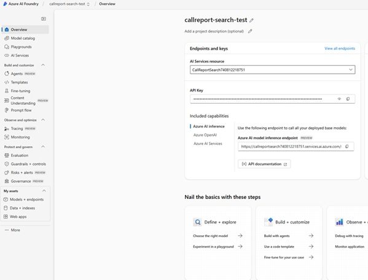

Azure Keys & Endpoints — Illustrated Setup Guide
This guide explains how to provision three Azure capabilities and capture the correct values for your application environment variables.
1. Speech to Text (Azure AI Speech service) — quick creation
Goal: create a Speech service and copy your KEY (1 or 2) and Location/Region to use in environment variables.
- Azure Portal → Create a resource → search “Speech” (Azure AI services) → Create.
- Select Subscription, Resource group, Region (near users), Name, and SKU (F0 for tests, S0 for production).
- After deployment, click Go to resource → open Keys and Endpoint.
- Copy KEY 1 or KEY 2 and note the Region value.
Dataverse environment variables:
- CallReport_SpeechSeviceKey = <key1-or-key2>
- Callreport_SpeechServiceRegion = <your-region>
2. Businesscard (Document Intelligence) — quick creation
Goal: create a Document Intelligence resource and copy your KEY and Endpoint.
- Azure Portal → Create a resource → Document Intelligence → Create.
- Fill Subscription, Resource group, Region, Name, SKU (F0 or S0).
- After deployment, open the resource → Keys and Endpoint.
- Copy a KEY and the Endpoint URL.
Dataverse environment variables:
- BusinessCardReader_Key = <key>
- BusinessCardReader_Endpoint = <endpoint URL>
3. OpenAI (Azure AI Project in Azure AI Foundry)
Goal: create a new AI Project, deploy a chat completion model (e.g., gpt-4.1), then copy the Target URL (model inference endpoint) and Key.
- Go to Azure AI Foundry → Create new → Project. Pick subscription, resource group, region, and name.
- Inside the project: open Model catalog → select a chat model (e.g., gpt-4.1) → Deploy (set a deployment name).
- Back in the project Overview, in Endpoints and keys, copy the API Key and the Azure AI model inference endpoint (Target URL).
- Use the endpoint together with your deployment name in API calls.
Dataverse environment variables:
- CallReport_AzureOpenAILink = <https://<your_project_name>.openai.azure.com/openai/deployments/gpt-4-4/chat/completions?api-version=2024-08-01-preview>
- CallReport_AzureOpenAIApiKey = <api-key>
Example: Azure AI Foundry — Project Overview (Endpoints and keys)
Your project Overview shows the API key and Azure AI model inference endpoint. Copy them for environment variables.
